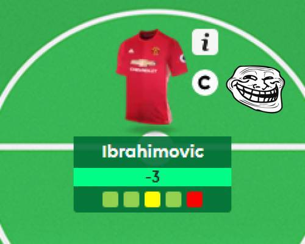

Never again (probably). fplR to the rescue…
An R package that provides a compendium of tools for working with Fantasy Premier League (FPL) data in R.
Installation
Get the development version from GitHub (CRAN submission should follow after commencement of the 2017/18 FPL season).
# If you haven't installed devtools yet, do so
install.packages("devtools")
# install package from github
devtools::install_github("ewenme/fplR", build_vignettes = TRUE)Usage
Data Analysis / Usage Examples in Vignettes
There are a couple of vignettes, introducing the packages principles and functionality, as well as some data analysis use cases.
For a complete list of vignettes run:
browseVignettes(package = "fplR")Player data examples
Get summary data on all players in the current FPL season
library(fplR)
# player data for current FPL season (note: this will update to 2017/18 season once underway):
players()
?playersGet detailed data (gameweek-level) on a player in the current FPL season (still 2016/17, currently)
library(fplR)
# Gameweek-level data for Alexis Sanchez in the current FPL season (note: this will update to 2017/18 season once underway):
playerDetailed(player_id = 12)
?playerDetailedUser data examples
Get data on a user’s player picks for a gameweek in the current FPL season
library(fplR)
# player data for current FPL season (note: this will update to 2017/18 season once underway):
userPicks(user_id = 123, gameweek = 10)
?userPicksCollaborators
If you want to contribute to the package:
- I followed the principles in Hadley Wickham’s R packages book
- Follow the GitHub fork/pull request model, or contact me directly